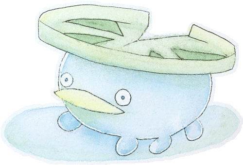

I've been thinking a lot about "OVERWHELMING LOTAD" lately. There's been a lot of talk about "OVERWHELMING LOTAD". I've been studying up on "OVERWHELMING LOTAD" and I think it's worth knowing. It's very hip and trendy, but do many people truly understand "OVERWHELMING LOTAD"?
What does it mean to be "OVERWHELMING LOTAD"? I tried to express this to you with my paints. I hope I was able to get the feeling of "OVERWHELMING LOTAD" across.
I can't imagine what life would be like without "OVERWHELMING LOTAD". It's become a part of my daily life. I have "OVERWHELMING LOTAD" dolls, "OVERWHELMING LOTAD" officially licensed clothes, just about everything "OVERWHELMING LOTAD" you can think of.
Somehow lately, my life has become to revolve around "OVERWHELMING LOTAD". I watch the TV show, I use the app, I just can't get away from "OVERWHELMING LOTAD" and I'm not sure I want to. Is this good? Is this bad? Only the future will tell.